15/02/2018 — Một phụ nữ 60 mấy tuổi may mắn được chuyên gia đọc điện tâm đồ
Bản dịch tiếng Việt của bài "A female in her 60s who was lucky to get expert ECG interpretation" – Dr. Smith’s ECG Blog. Giữ nguyên toàn bộ 11 hình ảnh của bản gốc.
Bài do Alex Bracey gửi và viết, Pendell Meyers và Steve Smith biên tập:
Tôi đang đi ngang qua khu hồi sức của khoa cấp cứu (ED) thì nghe thấy một cuộc thảo luận về điện tâm đồ sau đây. Tôi không có bệnh sử của ca này và cũng không có điện tâm đồ cũ để so sánh.

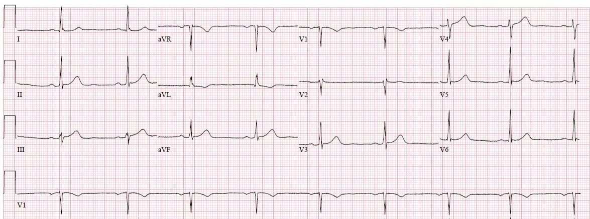
Đây là các chuyển đạo thành dưới và aVL, được phóng to:

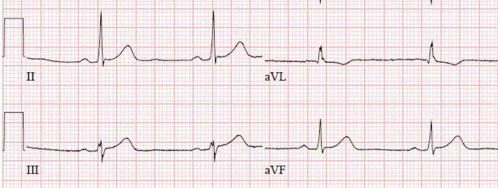
Sóng T đảo ngược ở aVL: khi nào là bất thường?
Không có LVH hay LBBB để quy cho TWI (tức là QRS bình thường). Mặc dù sóng T đảo ngược ở aVL có thể là bình thường khi QRS bình thường, điều này chỉ đúng khi góc T-QRS nhỏ. Nói cách khác, khi trục T và trục QRS tương tự nhau. Nói một cách khác nữa, nếu QRS âm thì sóng T có thể âm. Tuy nhiên, ở đây trục QRS khoảng 35 độ và trục T khoảng 85 độ. Do đó góc T-QRS là 25 – 85 = (-60) độ, và đó là bất thường [người dịch: nguyên văn ghi trục QRS khoảng 35 độ nhưng phép tính dùng 25, khớp với giá trị 25 ở bảng cuối bài]. Bất kỳ giá trị tuyệt đối nào lớn hơn 45 độ đều đáng nghi ngờ khi có sóng T đảo ngược (tuy nhiên, vấn đề này rất phức tạp; xem bảng ở cuối bài này.)
Giờ đây khi đã biết sóng T đảo ngược ở chuyển đạo aVL đi sau một phức bộ QRS bình thường là bất thường, điều đó giúp xác nhận rằng sóng T ở chuyển đạo III thực sự là sóng T tối cấp. Sóng T dẹt ở V2 gợi ý có khả năng tổn thương thành sau.
Phòng thông tim (cath lab) không được kích hoạt dựa trên điện tâm đồ ban đầu này. Bệnh nhân là một phụ nữ 60 mấy tuổi, có tiền sử tăng huyết áp (HTN) và hút thuốc lá, đến khám vì cảm giác đè nặng ngực trong 1 giờ. Điện tâm đồ ban đầu được ghi lúc 0839. Dựa trên điện tâm đồ ban đầu và lý do đến khám, bác sĩ điều trị chính phụ trách ca này đã quyết định giữ bệnh nhân lại ở đơn vị hồi sức của chúng tôi để theo dõi sát và ghi các điện tâm đồ liên tiếp.
Sau đó bà mô tả cơn đau ngực của mình như “có một con trâu ngồi trên ngực” và một cảm giác “kỳ lạ” ở hàm trong 1 giờ trước khi đến viện, kèm theo choáng váng và vã mồ hôi.
Ban đầu bệnh nhân được dùng fentanyl để giảm đau ngực nhưng hiệu quả rất ít, rồi bà nôn, sau đó được dùng zofran và famotidine. Troponin T ban đầu lúc 0840 dưới 0.010 ng/mL (không phát hiện được).
Điện tâm đồ sau đây được ghi lúc 0910:

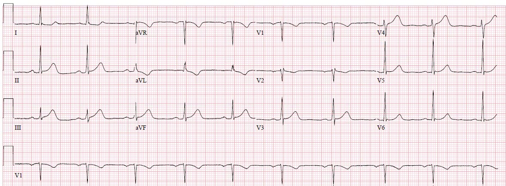
Phóng to:

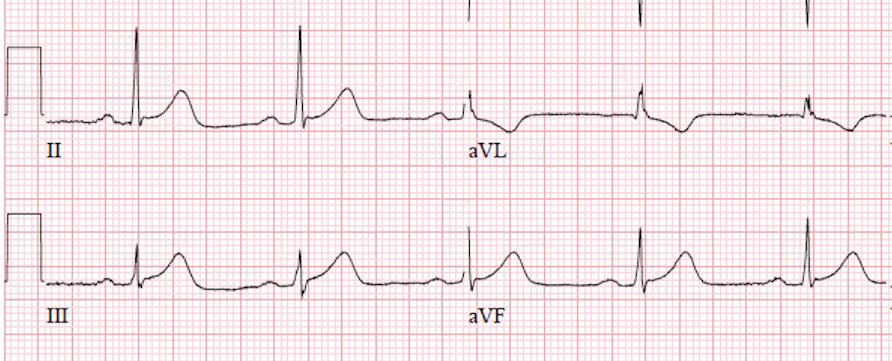
Nhịp xoang kèm blốc AV độ 1 ở ngưỡng giới hạn. So với lần trước, diện tích dưới đoạn ST và sóng T ở các chuyển đạo II, III và aVF đã tăng rõ rệt, đồng thời diện tích phía trên sóng T đảo ngược ở aVL cũng tăng, tất cả đều xác nhận rằng đây thực sự là các sóng T tối cấp thành dưới. ST chênh lên (STE) ở các chuyển đạo thành dưới lớn hơn. Giờ đây có TWI và ST chênh xuống (STD) nhẹ ở chuyển đạo V2, rất đáng nghi nhồi máu cơ tim thành sau.
Điện tâm đồ này có giá trị chẩn đoán tắc mạch vành cấp ở một động mạch cấp máu cho thành dưới và thành sau.
Phòng thông tim được kích hoạt sau điện tâm đồ này và bác sĩ nội trú chuyên khoa tim mạch (fellow) đã đến tận giường bệnh. Bệnh nhân được dùng aspirin và ticagrelor và được lên lịch thông tim khẩn.
Tại khu chờ thông tim, troponin T xét nghiệm lại là 0.01 ng/mL (dương tính). Điện tâm đồ sau đây được ghi lúc 1206:

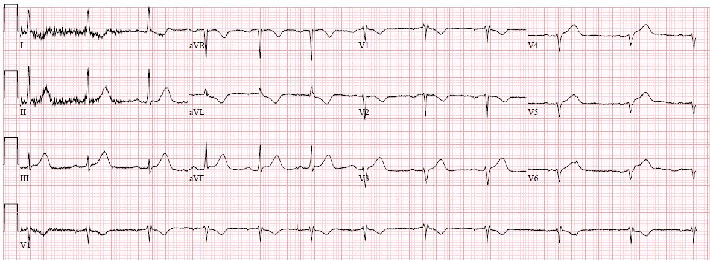
Các sóng T còn tối cấp hơn nữa. Các chuyển đạo bên phải (V3-V6 trên điện tâm đồ này tương ứng với V3R-V6R) có STE và sóng T tối cấp, chỉ điểm nhồi máu thất phải.

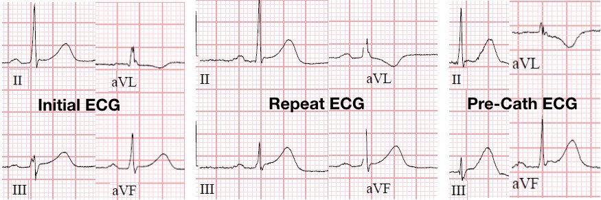
Cũng cần lưu ý rằng các đoạn ST trong ví dụ này có dạng lõm, một đặc điểm thường bị ngộ nhận sai lầm là hình ảnh không do thiếu máu cục bộ.

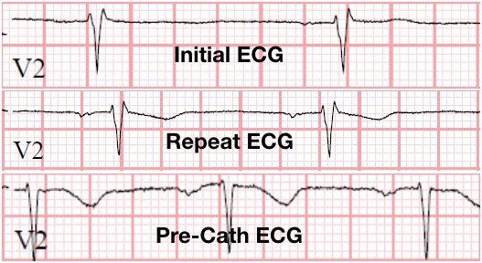
Sau đó bệnh nhân được đưa vào phòng thông tim và phát hiện tắc hoàn toàn 100% do huyết khối ở RCA đoạn gần, đã được đặt stent thành công.

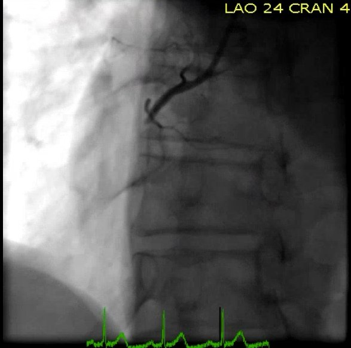

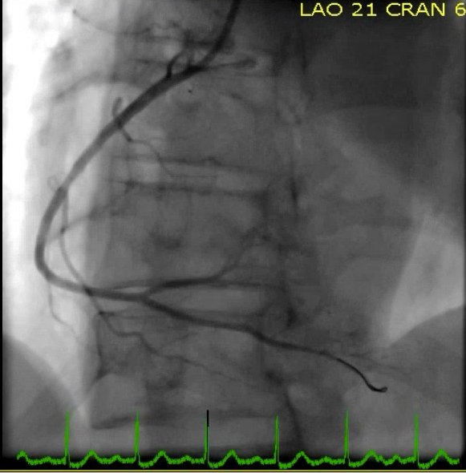
Trong lúc ở phòng thông tim, bà xuất hiện thoáng qua blốc tim hoàn toàn và tụt huyết áp, phải đặt máy tạo nhịp qua tĩnh mạch (transvenous pacer) và dùng thuốc vận mạch tạm thời. Thông tim phải cho thấy áp lực tim phải tăng và siêu âm tim làm cùng thời điểm cho thấy suy tim phải nhẹ.
Troponin T đỉnh là 3.00 ng/mL (tăng rất cao).

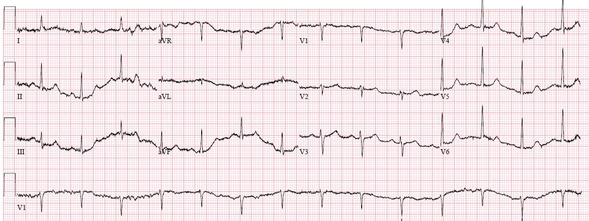
Máy tạo nhịp qua tĩnh mạch được rút vào ngày hôm sau và không cần dùng lại thuốc vận mạch. Bà được xuất viện về nhà 2 ngày sau đó mà không có thêm biến chứng nào.
Những điểm cần học:
1) Như chúng tôi đã từng minh họa trước đây, một lần nữa aVL lại là manh mối ban đầu then chốt để chẩn đoán tắc RCA kín đáo.
2) Troponin thế hệ hiện hành (contemporary) chỉ bắt đầu tăng 4-6 giờ sau khi khởi phát tắc mạch vành cấp. Dựa vào troponin tăng để chẩn đoán tắc mạch vành cấp sau ít nhất 4 giờ nhồi máu, trong khi điện tâm đồ có thể nhận ra ngay lập tức, là một lựa chọn kém.
3) Tiêu chuẩn STEMI đã không nhận ra được ca tắc mạch vành cấp này, cũng như nhiều ca khác. Chỉ có việc đọc điện tâm đồ của chuyên gia kết hợp với mức độ nghi ngờ lâm sàng cao mới có thể nhận ra ca này. Hãy nhớ rằng một số ca tắc mạch vành cấp sẽ biểu hiện với các điện tâm đồ liên tiếp hoàn toàn bình thường, và một số bệnh nhân có triệu chứng cực kỳ đáng lo ngại cần được kích hoạt phòng thông tim cấp cứu ngay cả khi không có dấu hiệu trên điện tâm đồ.
Góc QRST
Bản tóm tắt mới về góc QRST:
http://www.jecgonline.com/article/S0022-0736(17)30477-6/fulltext (toàn văn bài báo trên Journal of Electrocardiology)
Strebel I và cs. Diagnostic and prognostic value of the QRS-T-angle, an ECG marker quantifying heterogeneity of depolarization and repolarization, in patients with suspected non-ST-elevation myocardial infarction. J Electrocardiology tháng Một–tháng Hai năm 2018; Tập 51, Số 1, Trang e5–e6.
Bối cảnh: Giá trị của điện tâm đồ 12 chuyển đạo trong chẩn đoán nhồi máu cơ tim không ST chênh lên (NSTEMI) bị hạn chế do độ nhạy và độ đặc hiệu không đủ của các dấu hiệu chuẩn của thiếu máu cục bộ, và do các yếu tố gây nhiễu trên điện tâm đồ có thể khiến không áp dụng được các dấu hiệu này. Góc QRS-T phản ánh tính không đồng nhất giữa khử cực và tái cực và có thể hỗ trợ chẩn đoán và tiên lượng ở bệnh nhân nghi NSTEMI.
Phương pháp: Chúng tôi tuyển chọn tiến cứu 2705 bệnh nhân liên tiếp có triệu chứng gợi ý NSTEMI. Góc QRS-T cùng với sự hiện diện và loại yếu tố gây nhiễu trên điện tâm đồ được tính tự động từ điện tâm đồ 12 chuyển đạo kỹ thuật số ghi lúc đến khoa cấp cứu. Bệnh nhân được theo dõi tử vong do mọi nguyên nhân trong 3 năm.
Kết quả: NSTEMI là chẩn đoán cuối cùng ở 15% bệnh nhân. Nhìn chung, 18% có bất kỳ dạng yếu tố gây nhiễu nào trên điện tâm đồ. Góc QRS-T lớn hơn có ý nghĩa ở bệnh nhân NSTEMI so với bệnh nhân không bị NSTEMI (p nhỏ hơn 0.001). Độ chính xác chẩn đoán NSTEMI của góc QRS-T, được định lượng bằng diện tích dưới đường cong ROC, là 0.67 trên toàn bộ, và tương tự ở các bệnh nhân không có, có mức trung bình và có nhiều yếu tố gây nhiễu trên điện tâm đồ (AUC 0.65, 0.70 và 0.63, p = 0.20 khi so sánh). Góc QRS-T cung cấp giá trị chẩn đoán gia tăng so với các tiêu chuẩn điện tâm đồ chuẩn dạng nhị phân (ST chênh xuống, T đảo ngược) và điểm độ lệch ST (tất cả p nhỏ hơn 0.001). Góc QRS-T lớn hơn liên quan độc lập với tiên lượng xấu hơn (tỷ lệ sống còn 3 năm là 96%, 88% và 71% ở các bệnh nhân có góc QRS-T nhỏ hơn 50°, 50-100° và lớn hơn 100°, p nhỏ hơn 0.001).
Kết luận: Ở bệnh nhân nghi NSTEMI, góc QRS-T được tính tự động từ điện tâm đồ 12 chuyển đạo làm tăng thêm độ chính xác chẩn đoán ở cả bệnh nhân có và không có yếu tố gây nhiễu trên điện tâm đồ, và tiên đoán độc lập tử vong do mọi nguyên nhân trong 3 năm theo dõi.
Góc QRS-T bình thường
Từ bài báo này: Ziegler R và Bloomfield DK. A study of the normal QRS-T angle in the frontal plane (Nghiên cứu về góc QRS-T bình thường trên mặt phẳng trán). Journal of Electrocardiology 3(2):161-167; 1970.
Đúng vậy, có những bài báo giá trị từ 50 năm trước!
Trích dẫn từ bài báo:
Vì tôi không biết cách gõ ký hiệu “độ” trên blog này, tôi dùng “^” làm ký hiệu độ:
“Độ lệch của trục điện trung bình của QRS
của tim trên mặt phẳng trán (A^QRS) khỏi các giá trị có vẻ bình thường được xem là
bằng chứng của bất thường điện tâm đồ.
Tương tự, khoảng bình thường của trục điện trung bình
của T trên mặt phẳng trán (A^T) cũng đã được mô tả. Hiệu số giữa A^QRS và
A^T (góc QRS-T) cũng đã được chứng minh là hữu ích trong
việc xác định tính bình thường và bất thường của điện tâm đồ. Nhìn chung, người ta đã chấp nhận rằng
góc QRS-T trên mặt phẳng trán vượt quá
45^, 50^ hoặc 60^ là bất thường. Chúng tôi đã
nghiên cứu giá trị của góc QRS-T trên các điện tâm đồ bình thường
và bất thường, và nhận thấy rằng
A^QRS bình thường nằm trong khoảng từ -15^ đến +85^ trên hệ quy chiếu sáu trục (hexaxial) và nằm ở
trung tâm so với các vectơ QRS bình thường dao động
từ -30^ đến +95 ^.”

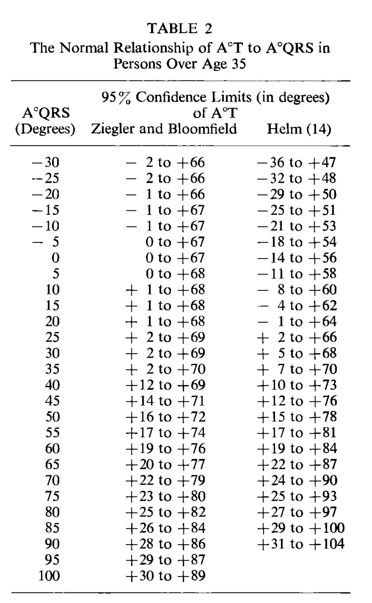